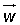
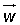
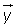
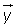

Problemas de vectores
1Expresa el vector = (1, 2, 3) como combinación lineal de los vectores:  = (1, 0, 1),
= (1, 0, 1),  = (1, 1, 0) y  = (0, 1, 1).
= (1, 1, 0) y  = (0, 1, 1).
2Siendo  = (1, 0, 1),
= (1, 0, 1),  = (1, 1, 0) y = (0, 1, 1), demostrar que dichos vectores son linealmente independientes y expresa el vector = (1, 2, 3) como combinación lineal de dichos vectores.
= (1, 1, 0) y = (0, 1, 1), demostrar que dichos vectores son linealmente independientes y expresa el vector = (1, 2, 3) como combinación lineal de dichos vectores.
3Dados los vectores  = (1, 2, 3),
= (1, 2, 3),  = (2, 1, 0) y = (−1, −1, 0), demostrar que dichos vectores forman una base y calcula las coordenadas del vector (1, −1, 0) respecto de dicha base.
= (2, 1, 0) y = (−1, −1, 0), demostrar que dichos vectores forman una base y calcula las coordenadas del vector (1, −1, 0) respecto de dicha base.
4Dados los vectores: (1, 1, 0), (1, 0, 1) y (0, 1, 1).
1Demostrar que forman una base.
2Hallar las coordenadas de los vectores de la base canónica respecto de esta base.
5Determinar el valor del parámetro k para que los vectores  = k
= k − 2
− 2 + 3,  = −
+ 3,  = − + k
+ k + sean:
+ sean:
1Ortogonales
2Paralelos
6Dados los puntos A(1, 0, 1), B(1, 1, 1) y C(1, 6, a), se pide:
1Hallar para qué valores del parámetro a están alineados.
2Hallar si existen valores de a para los cuales A, B y C son tres vértices de un paralelogramo de área 3 y, en caso afirmativo, calcularlos.
7Hallar dos vectores de módulo la unidad y ortogonales a (2, −2, 3) y (3, −3, 2).
8Hallar un vector perpendicular a y  , y que sea unitario.
, y que sea unitario.
- 1
- 2
- 3
- 4
- 5
- 6
- 7
- 8
Ejercicio 1 resuelto
Expresa el vector = (1, 2, 3) como combinación lineal de los vectores:  = (1, 0, 1),
= (1, 0, 1),  = (1, 1, 0) y = (0, 1, 1).
= (1, 1, 0) y = (0, 1, 1).
Sumamos miembro a miembro las tres ecuaciones y a la ecuación obtenida se le resta cada una de las ecuaciones.

Ejercicio 2 resuelto
Siendo  = (1, 0, 1),
= (1, 0, 1),  = (1, 1, 0) y = (0, 1, 1), demostrar que dichos vectores son linealmente independientes y expresa el vector = (1, 2, 3) como combinación lineal de dichos vectores.
= (1, 1, 0) y = (0, 1, 1), demostrar que dichos vectores son linealmente independientes y expresa el vector = (1, 2, 3) como combinación lineal de dichos vectores.

El sistema admite únicamente la solución trivial:
Por tanto, los tres vectores son linealmente independientes.
Sumamos miembro a miembro las tres ecuaciones y a la ecuación obtenida se le resta cada una de las ecuaciones.
Ejercicio 3 resuelto
Dados los vectores  = (1, 2, 3),
= (1, 2, 3),  = (2, 1, 0) y = (−1, −1, 0), demostrar que dichos vectores forman una base y calcula las coordenadas del vector (1, −1, 0) respecto de dicha base.
= (2, 1, 0) y = (−1, −1, 0), demostrar que dichos vectores forman una base y calcula las coordenadas del vector (1, −1, 0) respecto de dicha base.


El sistema homogéneo sólo admite la solución trivial:
Por tanto, los tres vectores son linealmente independientes y forman una base.


Las coordenadas del vector (1, −1, 0) respecto a la base son: .
.
Ejercicio 4 resuelto
Dados los vectores: (1, 1, 0), (1, 0, 1) y (0, 1, 1).
Soluciones:1Demostrar que forman una base.
Los tres vectores forman una base si son linealmente independientes.


En el sistema homogéneo el rango coincide con el número de incógnitas, por tanto tan sólo admite la solución trivial:

Los vectores son linealmente independientes y, por tanto, forma una base.
2Hallar las coordenadas de los vectores de la base canónica respecto de esta base.
Las coordenadas de los vectores de la base canónica respecto de la base son:


Ejercicio 5 resuelto
Determinar el valor del parámetro k para que los vectores  = k
= k − 2
− 2 + 3, = −
+ 3, = − + k
+ k + sean:
+ sean:
1Ortogonales
Para que los vectores sean ortogonales su producto escalar tiene que ser igual a cero.


2Paralelos
Para qué dos vectores sean paralelos, sus componentes tienen que ser proporcionales.

El sistema no admite solución.
Ejercicio 6 resuelto
Dados los puntos A(1, 0, 1), B(1, 1, 1) y C(1, 6, a), se pide:
Soluciones:1Hallar para qué valores del parámetro a están alineados.
Si A, B y C están alineados los vectores  y
y  tienen la misma dirección, por lo que son linealmente dependientes y tienen sus componentes proporcionales.
tienen la misma dirección, por lo que son linealmente dependientes y tienen sus componentes proporcionales.


2Hallar si existen valores de a para los cuales A, B y C son tres vértices de un paralelogramo de área 3 y, en caso afirmativo, calcularlos.
El módulo del producto vectorial de los vectores  y
y  es igual al área del paralelogramo construido sobre
es igual al área del paralelogramo construido sobre  y
y  .
.


Ejercicio 7 resuelto
Hallar dos vectores de módulo la unidad y ortogonales a (2, −2, 3) y (3, −3, 2).

Ejercicio 8 resuelto
Hallar un vector perpendicular a y  , y que sea unitario.
, y que sea unitario.

 Ejercicios
Ejercicios